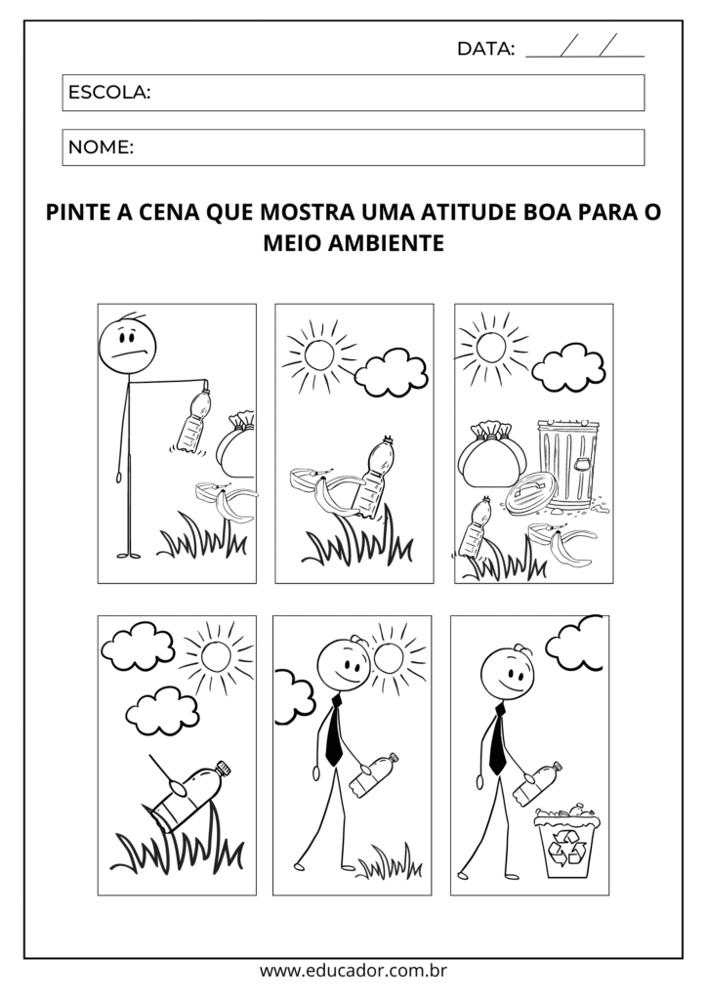
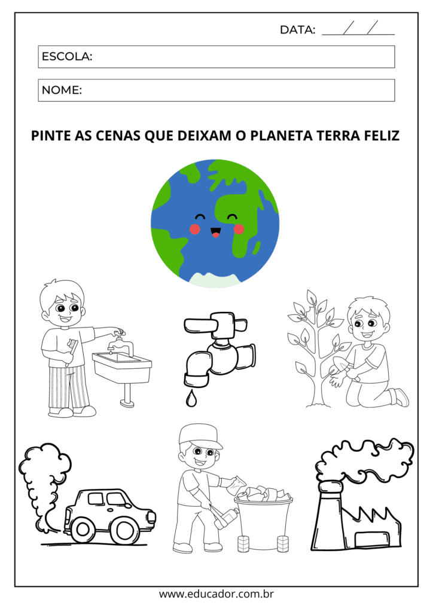
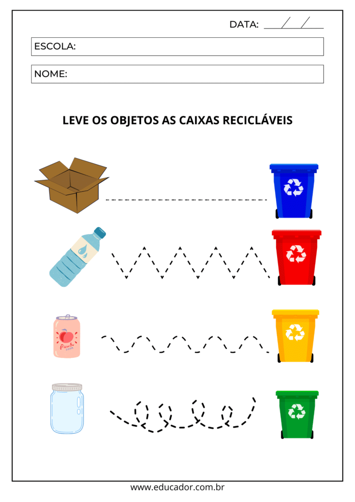
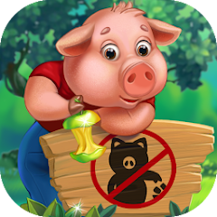

Crianças segurando plantas. Créditos: yanadjana/freepik, 2020
Nesta seção, irei trazer atividades e jogos que podem ajudar as crianças a aprenderem mais sobre o meio ambiente e como elas podem ajudar a contribuir para um mundo com menos alterações ambientais e melhor para todos.
A temática ambientalista é uma das mais faladas hoje e não é em vão, pois temos visto muitos fenomenos da natureza anormais e alterações climáticas jamais vistas antes como o aumento do calor e o alongamento da estiagem em Rondônia.
Esta página atuará como complemento aos conhecimentos passados na página principal, para que os futuros cidadãos já possam aprender um pouco sobre este tópico.
A seguir apresentarei algumas práticas e conhecimentos bem simples que poderão ser ensinadas para crianças, podendo dizer que a maioria trará uma significativa economia para seus responsáveis.
Esta é uma prática simples e que pode ser adotada por qualquer um, inclusive por uma criança, integrando bons modos e economia.
Esta Prática trás uma enorme economia no longo prazo quando praticada por uma criança, sem contar a contribuição com o meio ambiente.
Cuidar de uma planta fácil de cuidar, como feijões por exemplo, pode trazer uma maior conexão e maior preocupação com a natureza.
por meio desta prática, uma criança pode estimular sua criatividade, se divertir e também trazer economia, sendo possível encontrar diversas ideias criativas na internet.
Apesar de parecer estranho, é muito comum que crianças ou jovens utilizem apenas um lado das folhas do caderno ou não as utilizem completamente, sendo um enorme desperdício da matéria prima.
Tree watering child. Créditos: 9lnw, 2018
A ideia de compartilhar um momento com seu filho que trará uma alimentação mais saudável, um bem para o planeta e ainda se conectar mais com o meio ambiente e com sua criança é muito positiva, você pode utilizar garrafas e objetos que não tenham utilidade para desenvolver e reciclar.
Sustentabilidade e tecnologia. Créditos: pcess609/iStock, 2020
A ideia deste painel seria deixar várias atividades simples expostas, como economizar energia desligando as luzes, fechar as torneiras fora de uso e se certificar de fechá-las totalmente, jogar as embalagens no lixo e utilizar utensílios e garrafas recicláveis, evitando o descarte de objetos plásticos os quais são prejudiciais ao meio ambiente e, inserir este painel em uma cartolina e colocar em uma parede que é bastante vista, incentivando o conhecimento de atitudes básicas pelas crianças e por quem transita no local.
Através da internet é possível encontrar atividades como, desenho, pintura e atividades de aprendizagem básica e, durante uma pesquisa, encontrei o site Educador.com, nele é possível pesquisar por várias atividades de vários níveis e, incluindo, atividades sobre o meio ambiente. Seguem abaixo algumas imagens:
  Você pode baixar as imagens no site e imprimir!
Todos os jogos mencionados nesta lista estão disponíveis na Google Play Store.
Este jogo traz, de maneira simples, a experiência de como separar o lixo, tratar animais vítimas de poluição, tratar as águas de rios e podar e cultivar áreas verdes.
Neste game, o jogador administra uma comunidade sustentável que abriga outros animais, gerida pelo conhecido carneiro Shaun, das clássicas animações. O usuário vai ter de fazer escolhas importantes para o bem dos animais e definir o futuro da comunidade. Um problema importante é que a tradução do jogo está traduzindo para Português de Portugal e pode ser complicada para crianças muito novas entenderem.
Este é provavelmente o jogo mais divertido desta lista pois ele une a temática sustentável com aspectos de jogos modernos, sendo indicado para todos os públicos.
Este jogo propõe desafios e níveis de dificuldade conforme a progessão nos desafios, enquanto os outros jogos buscavam educar sobre o tema, este visa especificamente orientar o usuário com atividades benéficas ao planeta.
Todas as imagens acima foram retiradas da Google Play Store